ZBOR GRAĐANA
Neposredna demokratija u našem kraju
Zbor građana je oblik neposredne demokratije: komšije se okupe, rasprave o bitnim pitanjima svoje mesne zajednice i same odluče - javno, uz otvorenu raspravu i bez skrivene agende.
-
Direktno odlučivanje
Građani raspravljaju o lokalnim problemima i predlažu konkretna rešenja - o njima se glasa na licu mesta, a ne u kancelarijama.
-
Transparentnost
Sve odluke se donose javno, uz otvorenu raspravu. Nema dogovora u četiri oka ni skrivene agende.
-
Povezanost zajednice
Okupljanje na zborovima jača solidarnost i osećaj zajedničke odgovornosti za kraj u kome živimo.
-
Jačanje demokratije
Građani preuzimaju kontrolu nad pitanjima koja ih se tiču, umesto da čekaju odluke "odozgo".
-
Veći pritisak na institucije
Kada se građani organizuju i zajednički odlučuju, njihov glas postaje jači i teže ga je ignorisati.
Pridruži se Zboru građana i budi deo promena. Zajedno gradimo pravedniju, transparentniju i snažniju zajednicu - jer naš glas treba da se čuje.
PRVI ZBOR GRAĐANA · 30. MART 2025.
Sve je počelo na Bronxu
Na prvom zboru MZ "Boško Buha" okupili su se građani Limana II sa zajedničkim ciljem: da se izbore za svoja prava i unaprede život u svojoj zajednici. Svaki glas se čuo, a odluke su donete transparentnim glasanjem - bez unapred pripremljenih zaključaka.
Zbor nije jednokratni protest: to je mesto gde se odluke donose, zapisuju i proveravaju. Zato su zapisnici javni - zapisnik sa osmog zbora (16. 6. 2026) možeš pročitati ovde, a svi zapisnici stoje u spisku zapisnika.
Kad novi zbor bude zakazan, datum, vreme i dnevni red stajaće u kartici na vrhu strane.
KLJUČNE TEME I ODLUKE
- Isplata plata nastavnicima OŠ "Jovan Popović" Zahtev Gradu za hitnu isplatu - deca i nastavnici ne smeju da čekaju.
- Saradnja sa MZ Liman I Udružujemo snage protiv izgradnje SPC kod Štranda.
- Opoziv Saveta MZ "Boško Buha" Ne pristajemo na netransparentnost i zatvorene prostorije naše mesne zajednice.
- Podrška studentima Njihova borba je i naša borba.
- Provera biračkih spiskova Ne želimo lažne glasače.
- Rešavanje vodosnabdevanja Vreme je da se reši ovaj gorući problem.
FOTOGRAFIJE SA PRVOG ZBORA · 30. MART 2025.
-
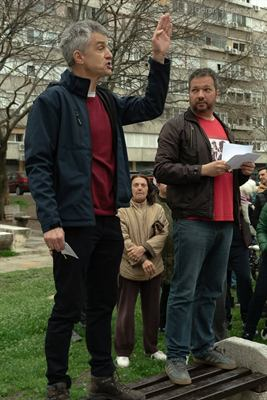
-
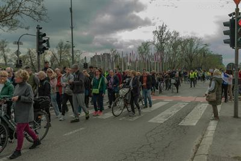
-
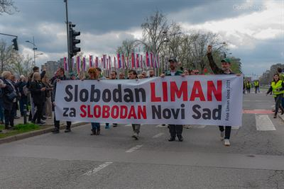
-
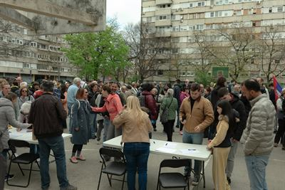
-
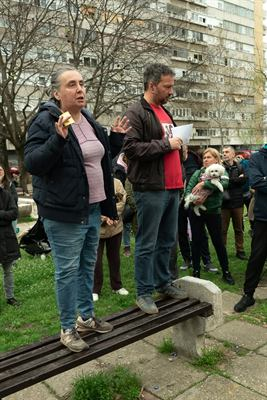
-
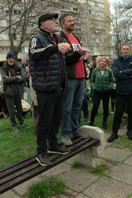
-
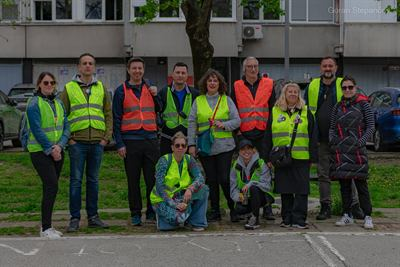
-
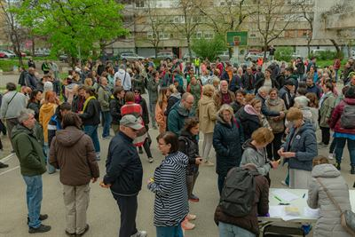
-
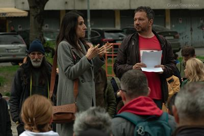
-
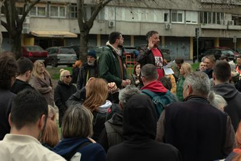
-
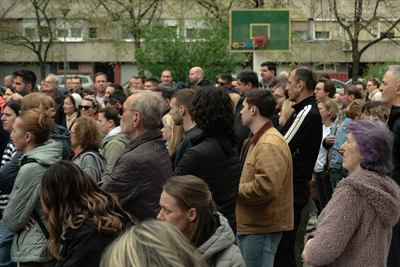
-
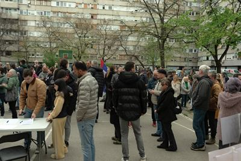
Klik na fotografiju otvara veću verziju. Fotografije poslao Goran Stepančev.
Imaš ideju za Liman 2?
Predloži je komšijama. Predlog se šalje Zboru građana na razmatranje.